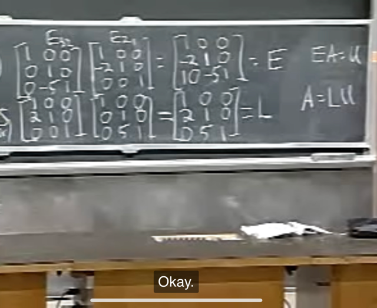
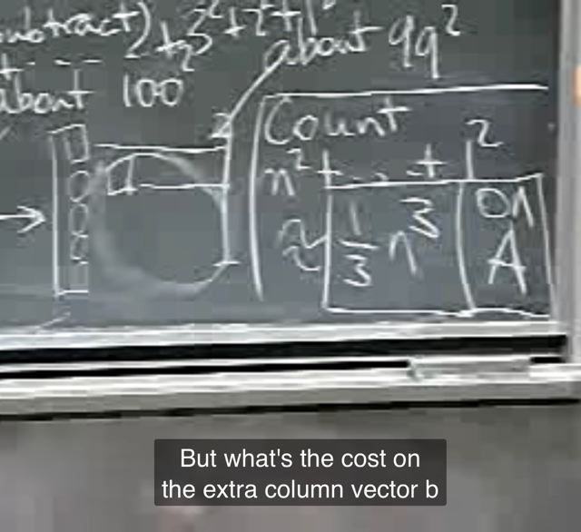
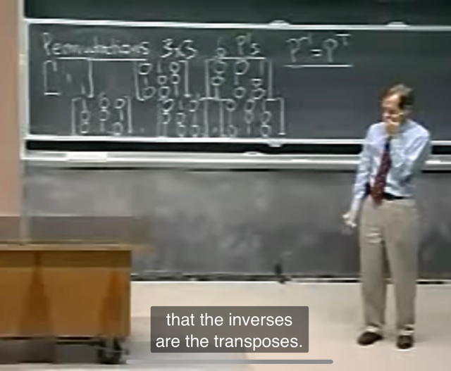

← Bản đồBản nhápnguyên văn ghi chúhình tương tácảnh bảng MIT OCWchữ thường: Claude viết lại theo ý ghi chú, tác giả sẽ duyệt lại; mỗi mục có link ghi chú gốc
Đại số tuyến tính · MIT 18.06 bài giảng 4
Phân rã A = LU
Phép khử biến \(A\) thành \(U\). Đảo ngược lại thì \(A = LU\): phép phân rã đầu tiên của môn học. Bài này cho thấy vì sao \(L\) gọn hơn hẳn ma trận khử \(E\), và vì sao khử Gauss tốn cỡ \(n^3/3\) phép tính.
\(L\) làm ngược việc của \(E\): \(EA = U\) và \(LU = A\) cho \(LE = I\), tức \(L = E^{-1}\). Nghịch đảo của một bước khử chỉ là đổi dấu hệ số: \(-4\) thành \(4\). \(U\) là tam giác trên (Upper), các pivot nằm trên đường chéo; \(L\) là tam giác dưới (Lower), đường chéo toàn số 1. Tách tiếp các pivot ra một ma trận đường chéo \(D\) thì được \(A = LDU\):
Với ma trận 3 × 3 (chưa cần đổi hàng): \(E_{32}E_{31}E_{21}A = U\). Đảo ngược từng bước, bước làm sau thì gỡ trước:
\[ A = E_{21}^{-1}E_{31}^{-1}E_{32}^{-1}\,U = LU. \]
Lấy \(E_{21}\) trừ 2 lần hàng 1, \(E_{32}\) trừ 5 lần hàng 2 (và \(E_{31} = I\)). Nhân \(E = E_{32}E_{21}\) ra có một số 10 ở góc: hàng 1 ảnh hưởng hàng 2, rồi hàng 2 lại ảnh hưởng hàng 3. Nhân theo thứ tự ngược \(L = E_{21}^{-1}E_{32}^{-1}\) thì không có chuyện trộn đó: các hệ số khử 2 và 5 nằm nguyên vị trí trong \(L\).
Tương tácĐầu vào: bấm "Bước tiếp". Kết quả: \(U\) sau mỗi bước khử, và \(L\) được điền dần bằng đúng hệ số vừa dùng (tô cam). Bước cuối so \(L\) với \(E\).

BảngTrên: \(E = E_{32}E_{21}\) có số 10. Dưới: \(L\) chỉ chứa 2 và 5.
Đếm mỗi "nhân rồi trừ" là một phép tính. Với \(n = 100\), làm sạch cột 1 nghĩa là sửa khoảng 99 hàng, mỗi hàng 100 số: chừng \(100^2\). Cột 2 là bài toán y hệt nhưng cỡ 99: chừng \(99^2\). Cứ thế, tổng cộng
Gs lập luận là đây là tổng của n term, mà bự nhất là n², nên nó ko thể to hơn n × n² = n³ được.
[…]
Cái này thật ra sẽ cần kiến thức của 18.01 nên mình có thể sẽ quay lại sau nhưng hiểu đại khái là vầy
Tương tácĐầu vào: kéo \(n\) hoặc chọn 100, 1000. Kết quả: tổng chính xác so với \(n^3/3\); \(n\) càng lớn, tỉ lệ càng sát 1. Vế phải \(b\) chỉ tốn cỡ \(n^2\).

BảngĐếm phép tính: khoảng \(\tfrac{1}{3}n^3\) cho \(A\).
Gặp pivot bằng 0 thì phải đổi hàng, và đổi hàng là nhân một ma trận hoán vị: ma trận đơn vị với các hàng sắp lại. Với 3 × 3 có đúng 6 ma trận như vậy (kể cả \(I\)). Nhân hai cái trong nhóm vẫn ra một cái trong nhóm; nghịch đảo của mỗi cái cũng nằm trong nhóm, và chính là chuyển vị của nó:
\[ P^{-1} = P^T. \]

BảngSáu ma trận hoán vị 3 × 3, và \(P^{-1} = P^T\).